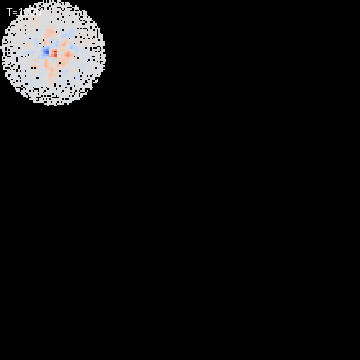

ogamespec/atom · issue #1 · 2D
2D: домены, сети
и существенная эволюция
В 2D те же правила: зародыш — одна клетка, биты p/n расходятся только по активным клеткам, без FFT и поля. Оказалось, что 2D эволюционирует гораздо лучше 3D: фронт и число клеток растут в разы, а фазовое разделение даёт доменную сеть.
N: 1 000 000T: 10 000L: 20 001лучший рост: {{BEST}}проверок: {{N_CHECKS}}
01 Правило
Четыре направления (+x,−x,+y,−y). Веса: 1 + AP·(n_d−p_d)/N + RP·(p−p_d)/N + bias·b_d + noise·ξ; у n — свои AN/RN и независимый шум. Mobility — доля движущихся бит. Пустые клетки не обрабатываются.
front_ratio = front(10k)/front(5k); active_ratio = active(10k)/active(5k)
02 Результаты
{{TABLE}}


Что найдено. P6 даёт существенный рост: фронт ×3.4, активные клетки ×4.5. P1 даёт доменную сеть: p- и n-домены, границы которых образуют связную сеть (доля стенок ~0.31 после сглаживания). Это уже не «плато» 3D.
03 Проверки
{{CHECKS}}
04 Файлы
native/ca2d.c · scripts/run_sweep_2d.py · scripts/make_2d_gifs.py · results/ca2d_gif/
3D-часть: локальный CA, свип 21 правила.